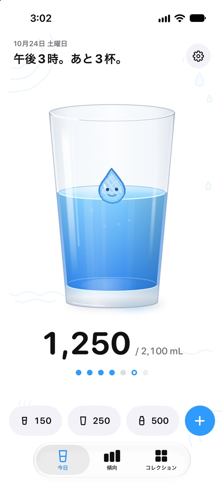
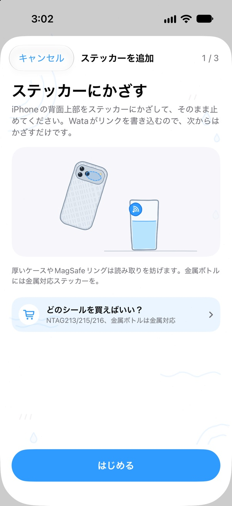
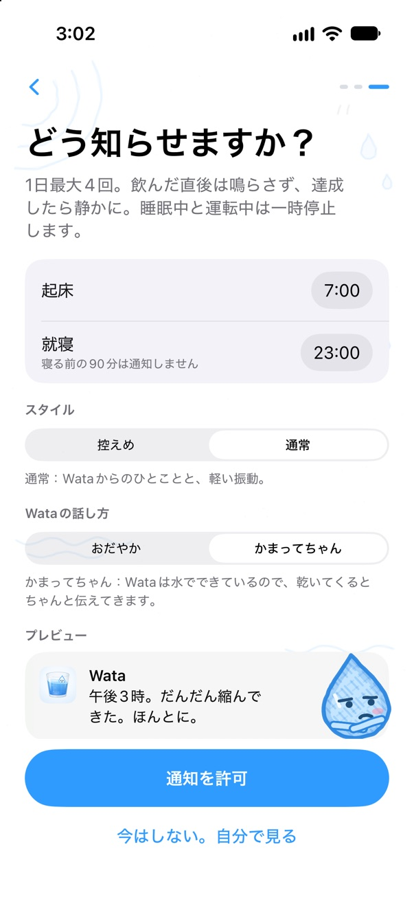
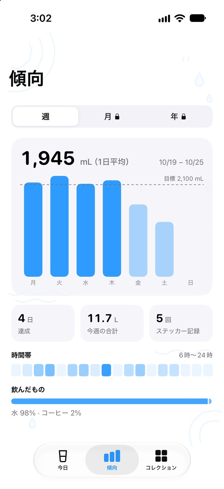
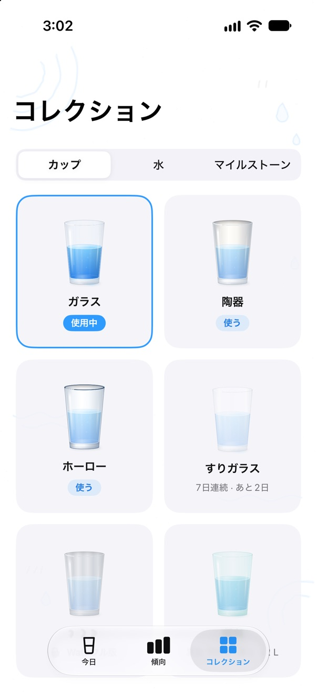
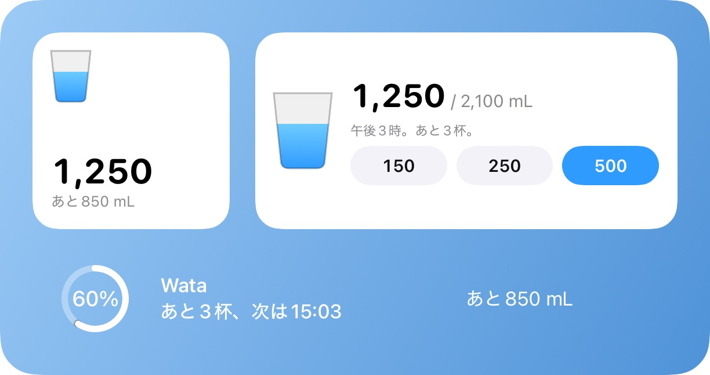
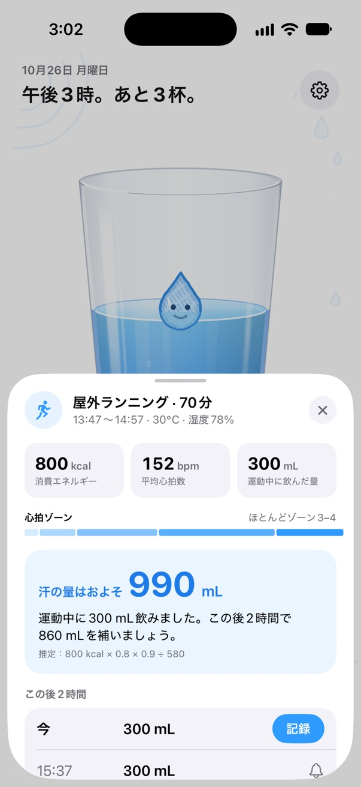

かざして、 一杯記録。
ボトルに NFC ステッカーを貼って iPhone をかざし、出てきたバナーをタップすれば、App を探さなくても水分がヘルスケアに入ります。Wata は時計ではなく、今日あとどれだけ飲むかでお知らせします。本物のようなグラスの中に住んでいて、iPhone を揺らすと水も揺れます。
App Store で近日公開
iPhone XS 以降（iOS 18）· Apple Watch（watchOS 11）

ボトルごとにステッカーを
チップさえ合えば、どの NFC シールでも使えます。コーヒー1杯分で数枚買えます。Wata で一度ペアリングすれば、あとはかざすだけでボトル1本分を記録します。
- お使いの iPhone のどこをかざせばいいか、Wata が機種ごとに絵で示します。iPhone Duo は先に閉じてもらいます。
- ステッカーはひとつの容器を表します。名前、容量、中身。
- 数分以内に同じステッカーをまた読むと、記録する前に確認します。ボトルと iPhone が同じカバンに入っていても大丈夫。
- 記録してから10秒間は、半分にしたり取り消したりできます。
- 家族でひとつのカップを共有できます。iPhone ごとに、それぞれの記録になります。
- iPhone は画面がついているときにステッカーを読み、バナーのタップを求めます。ショートカットのオートメーションなら、タップなしで記録できます。

飲んだ量に合わせて動くお知らせ
Wata は今日あとどれだけ飲むかからお知らせを組み、どこで記録した一杯でも、飲むたびに組み直します。
- 飲んでから45分以内は鳴りません。目標を達成したら、寝る前の90分も静かに。
- 1日に数回まで。朝から夜まで散らして、毎回小さな一杯だけをお願いします。
- 通知からそのまま記録するか、「あとで」をタップ。
- 集中モードで「正時だけ」や「お知らせなし」に。会議中の一時停止も選べます。

Wata は水でできている
グラスの中のしずくが、今日の調子を教えてくれます。朝は寝ぼけ顔、遅れ気味だと喉が渇き、何時間も飲まないとすねて、夜にたくさん残っていると泣きそうになり、目標を達成すると紙吹雪の中で跳ね回ります。

おだやか午後3時。あと850 mL、この一杯は280 mLで。
かまってちゃん午後3時。だんだん縮んできた。ほんとに。
かまってちゃん、2回スルーされたあとお知らせ、効いてないみたい。静かに蒸発してるね。
- 話し方は2種類。時刻と残りを伝えるおだやかな話し方と、罪悪感に訴えて一杯飲ませようとするマスコットのかまってちゃん。
- かまってちゃんがお願いするのはいつも小さな一杯だけ。目標達成後や寝る前、短時間に飲みすぎたときは静かにしています。
- お知らせには、そのときの Wata の表情が付きます。
- 文章は言語ごとに書き起こしたもので、翻訳ではありません。
ヘルスケアにも、手首にも、ホーム画面にも
飲んだものはすべて水分としてヘルスケアに入り、ほかの App がそこに記録した水分も二重には数えません。目標は体重と運動、そして希望すれば住んでいる場所の暑さから計算します。
- Apple Watch：リングと3つのクイック量、Digital Crown。文字盤のコンプリケーションも。
- ホーム画面とロック画面のウィジェット、コントロールセンターのボタン、Siri とショートカット。
- 傾向は週ごと。Wataフル版なら月と年、1年のふり返りも。
- コレクション：飲むカップ、水の質感、そして毎日配られるのではなく、がんばって手に入れるいくつかの記念メダル。
- iPhone Duo：開くとグラスの横に今日の予定、テーブルトップでは大きなボタンが並びます。




運動のあとは、かいた汗のぶんを取り戻す
ワークアウトがヘルスケアに記録されると、Wata は消費エネルギーと運動したときの気候から汗の量を見積もり、今日の目標に足して、取り戻す量を次の2時間に分けます。
- 40分ごとに最大300 mL。長い運動や暑い日の運動のあとはスポーツドリンクも。
- 毎週同じ時間にする運動の前に、お知らせします。
- Wataフル版：ショートカットのオートメーションで運動中にもお知らせ（汗の量を超えることはありません）、見積もりを自分に合わせる発汗テスト、ロック画面での回復タイム。

無料で、または一度の購入で
Wata は無料で使えて、広告は1日に多くても1回。一度の支払いで広告がなくなり、すべての機能が使えます。家族全員で。
Wata
無料
- 記録、お知らせ、ヘルスケアと Apple Watch、ウィジェット、Siri
- ステッカー1枚
- 週ごとの傾向、運動後のアドバイス
- 広告は1日に多くても1回。最初の3日間はなし、記録中には決して出ません
Wataフル版
US$2.99（買い切り）
- 広告は一切なし
- ステッカーは何枚でも
- すべての履歴：月、年、1年のふり返り
- すべての飲み物、すべてのカップ、すべての水の質感
- 運動中のお知らせと発汗テスト
- ファミリー共有に対応。サブスクリプションではありません
Wata 1 のアップデートはすべて無料で、無料版の広告が増えることもありません。価格は App Store に表示されるお住まいの地域の価格が適用されます。
あなたの水分は、あなたのもの
飲んだ記録はあなたのデバイスとヘルスケアに保存され、ヘルスケアは iCloud にも保存できます。開発者がそれを受け取ることはありません。健康に関する情報が、無料版の広告ネットワークに渡ることも一切ありません。